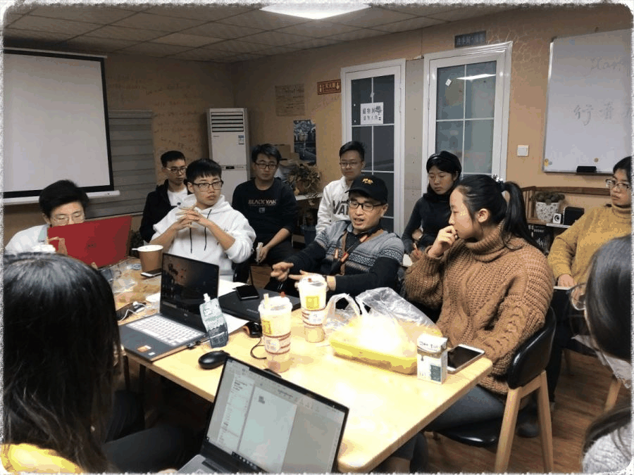
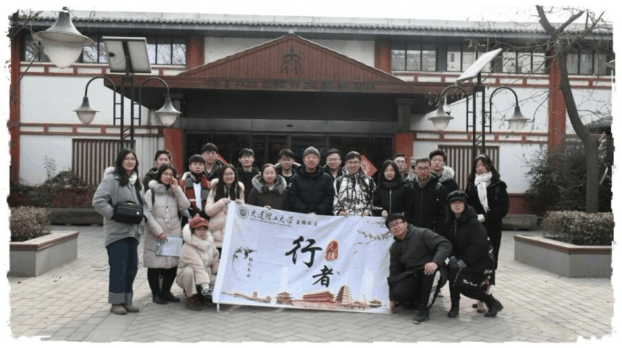

【秦简拓语·八】踏上一段苦旅，沉淀一段思考
余秋雨先生曾用自己的一双脚，在古代文人留下较深脚印的地方,用自己的笔流泻出一串兼具文化和历史的文字，而如今，我在大一的这个寒假，也踏上了属于我自己的“文化苦旅”，与行者们一起，用脚丈量西安古城的每一寸土地。

踏上一段苦旅，沉淀一段思考
旅程途中，每天都在为古代工匠的精湛工艺和奇思妙想而惊叹，记得那件让我最为之向往的唐葡萄花鸟纹银香囊，去之前是在《国家宝藏》上看到它的，记忆犹深的也只是它背后的那段唐玄宗与杨贵妃的凄美爱情。在赐死贵妃后，玄宗后来自蜀地重返京城，念及旧情，密令改葬。当挖开旧冢时，发现当初埋葬时用于裹尸的紫色褥子以及尸体都已经腐烂，唯有这枚香囊还好好的。
而在第一天去到的陕西历史博物馆中，在我看到它的构造后，又为它精巧的构造而惊叹，它使用各种平衡的原理，使得里面的香料不撒落出来，其设计之科学和巧妙，令我叹绝。还有那规模宏大的兵马俑，早已听闻这是世界八大奇迹之一，但是在亲眼看过后，真的是为它宏大的规模而震撼。

旅途之后，沉淀了更多的思考与感悟。在西安旅途的结束过后，我对文物保护这一块产生了极大的兴趣，在之后的旅途中，我也对文物保护方面较为关注，在对比之后去到的吴哥窟后，我认为中国在文物保护方面做的是很不错的，尤其是大明宫和兵马俑的文物保护工作，在观看了大明宫文物保护工作的影片后，尤其是紫宸殿遗址,是在地面以上做了隔离层,这个项目首先利用树木,修剪出紫宸殿的意象,通过轻钢和原木勾勒出宫殿轮廓,形象非常丰富。这种轻钢与树木结合的展示设计,在遗址保护展示历史上也很少见。 我们后面也采访到了大明宫的工作人员，在他的讲述中，我对大明宫也有了更深一步的了解。

此次旅途中，还有与小伙伴一起踏上文化苦旅的快乐，大家会一起给同伴精心准备生日惊喜，在路途上大家互相帮忙，互相照顾，在结束白天的行程过后，大家在晚上会开会总结当天的感悟，会在会上分享当天的快乐，也会一起探讨旅途中的问题该怎样解决，还记得大家一起熬夜写文字，做推送的每个夜晚，现在想想，也是“文化苦旅”中的又一大乐趣，还有在参观完各种精巧的文物后，行者们互相交流着自己的想法，猜测着文物的前生，我想，这便是一群因文化结缘的人碰撞出的思想火花。

“路，就是书。”这是余秋雨在书中所写到的，而这些天的旅程途中，我收获的除了书中的知识，还有很多很多。行者有域，思者无疆，我们再会！


来源丨行者无疆实践团
文字丨王一岚
排版丨邓子孚
审核丨潘雯雯 邓子孚
行者无疆实践团
QQ：2758025831

随行者一起认识世界
长按二维码关注